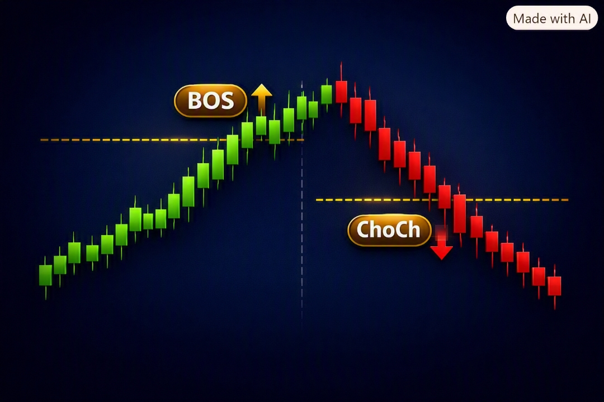
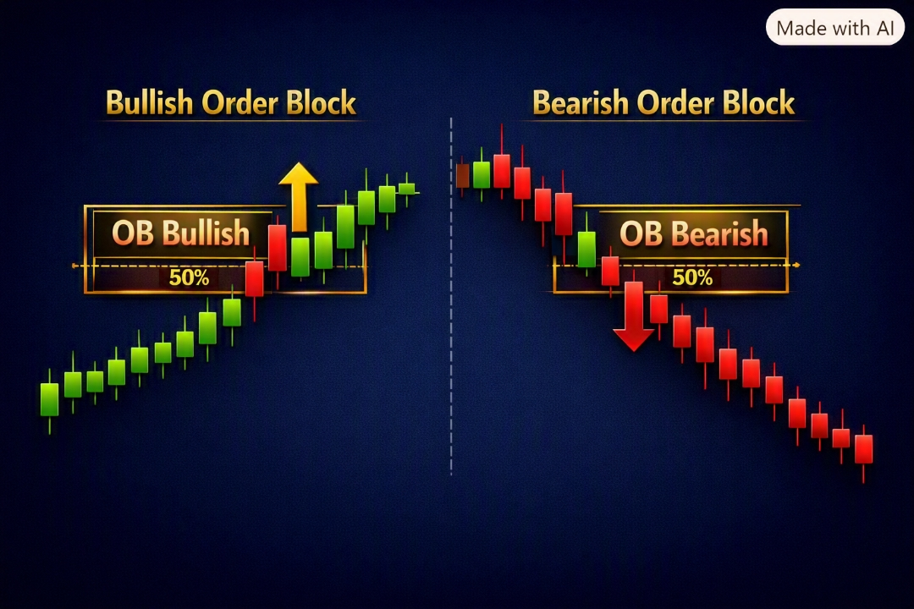
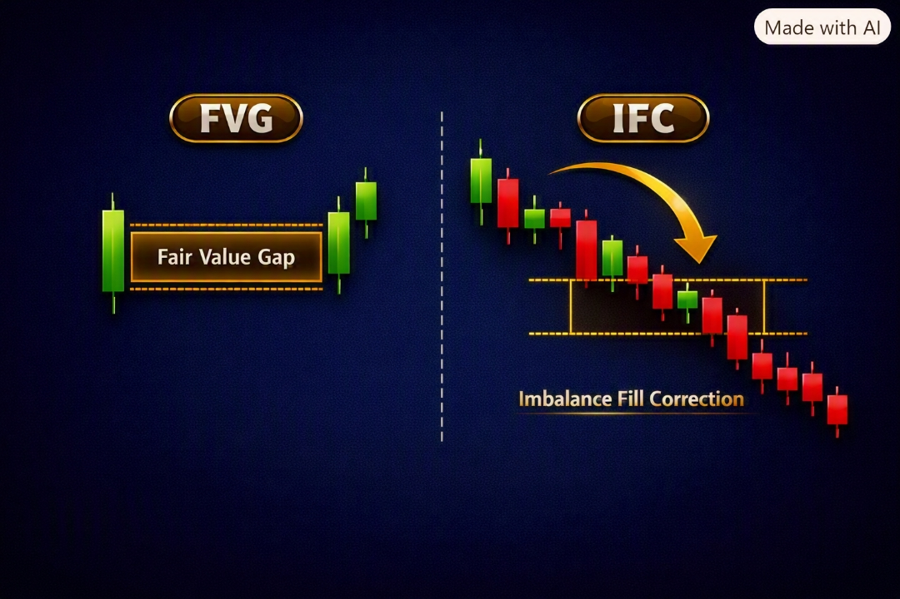
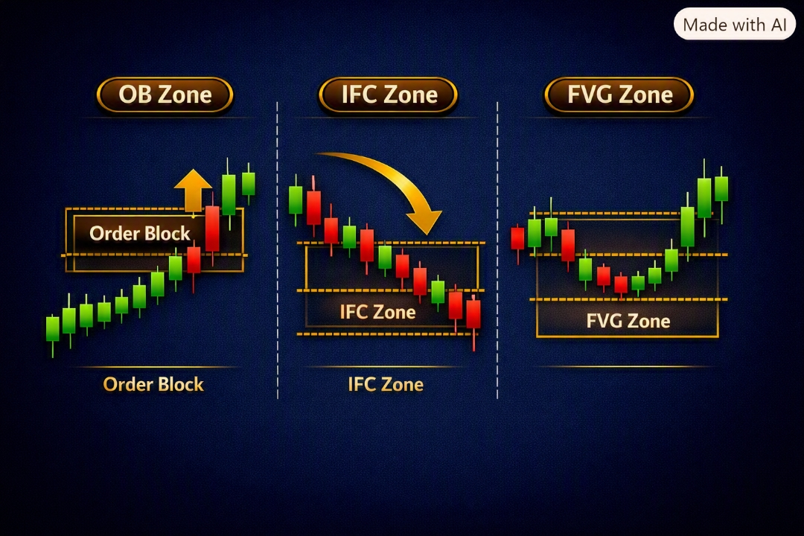
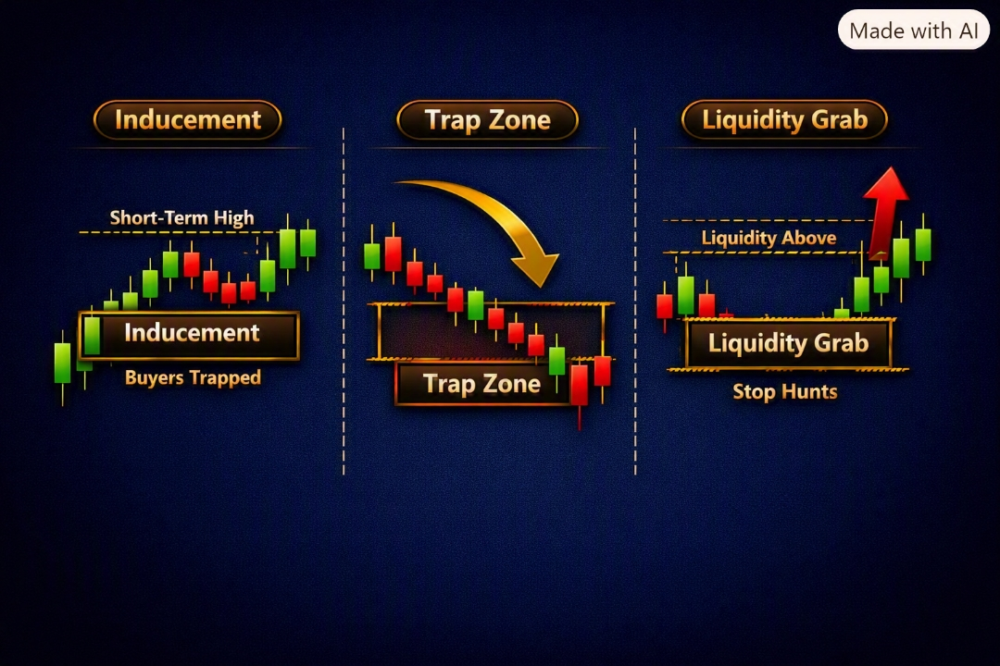
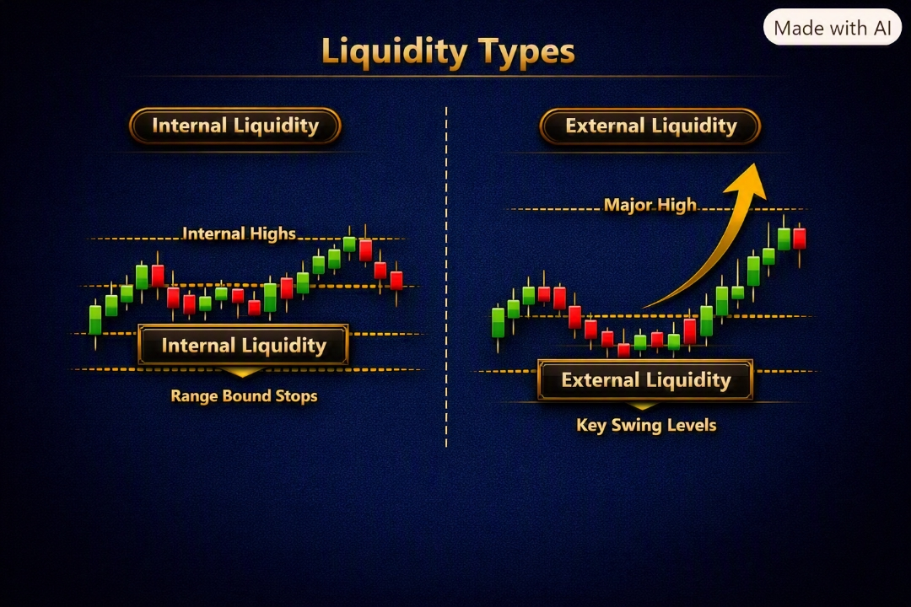
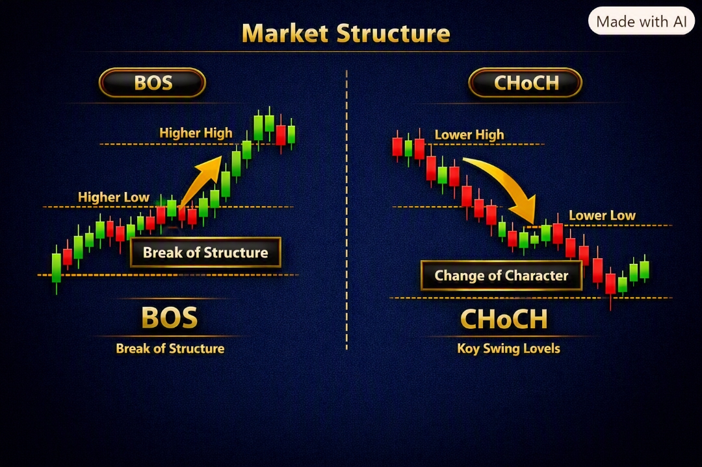
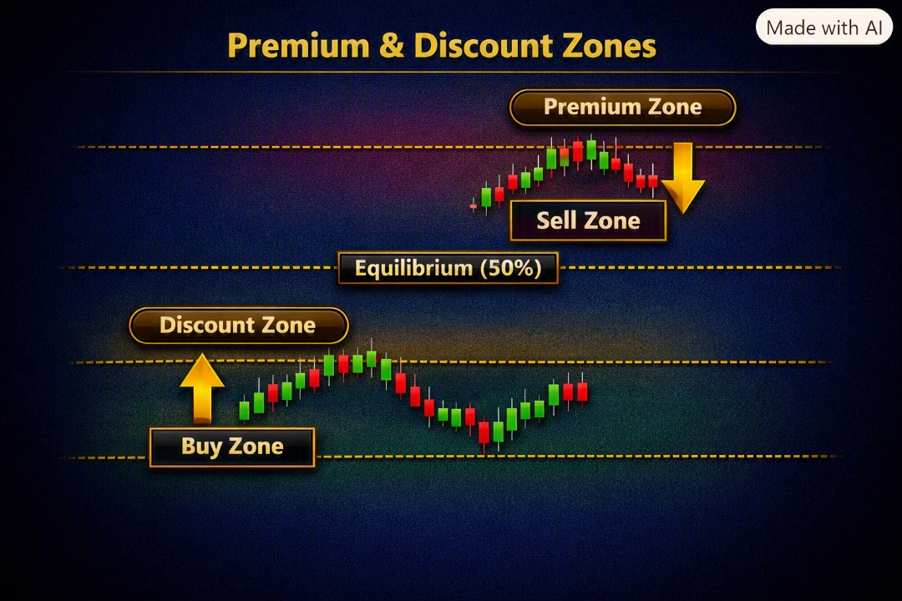
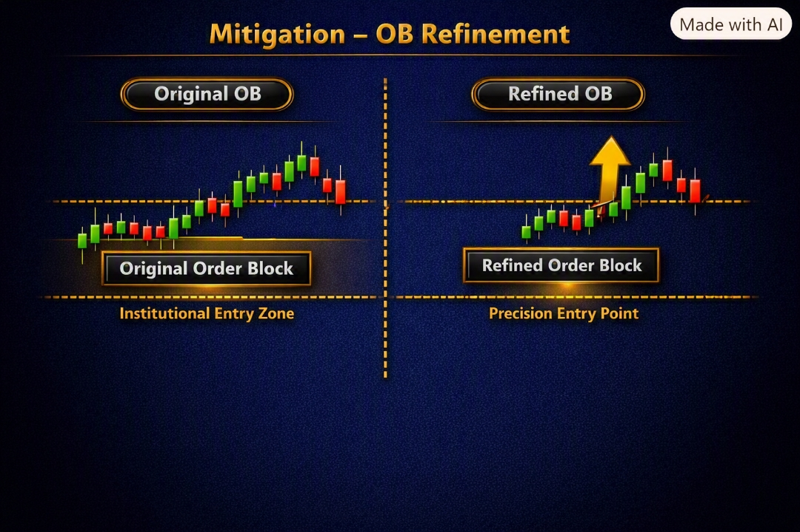

Forexin Turkaslani
آکادمی استراتژی LIT
آکادمی استراتژی LIT
 چت آنلاین
چت آنلاین
از خواندن ساختار تا شکار تلههای بازار | متد فارکسین ترک اصلانی
سلام دوست من! 👋 این یک کتاب کامل و تصویری است. هر بخش را با بکتست همراه کن تا جادوی ترکیب قواعد را ببینی.
اولین قدم، خواندن داستان قیمت است:

روند صعودی = سقفها و کفهای بالاتر (HH/HL) | روند نزولی = LH/LL. برای جهتیابی از H1/H4/D1/W1 استفاده کن؛ ساختار داخلی (M15) فقط فرکتال است و نباید جهت تایم بزرگ را عوض کند — همیشه impulsoهای HTF را بکش.
OB آخرین کندل قبل از حرکت مخالف؛ محل انباشت صدها سفارش نهادی؛ منطقهٔ واکنش قوی. حساسترین بخش = بدنه و ۵۰٪ بدنه.

FVG شکاف بین دو سایه بر اثر حرکت شدید یکطرفه؛ یک ناکارایی که قیمت دیر یا زود تا ۱۰۰٪ پرش میکند. IFC کندلی که آن FVG را شروع میکند (سایهٔ آغازین).

قوانین: BOS باید سقف/کف همجهت را بشکند | ChoCh باید کف/سقف خلاف جهت را بشکند | نقطهٔ شکستهشده بین دو impulso باشد.
قیمت را تا POI (مثلاً OB در H1) دنبال کن؛ وقتی رسید و در تایم پایین ChoCh داد → تأیید → ورود در OB انتهایی. چون تایم پایین نویز کمی دارد، این مطمئنترین ورود است.

Inducement سطوحی با نقدینگی retail یا OB/IFC تایم پایین که فرکتال خلاف فرکتال بزرگ میسازد؛ فقط برای وسوسهٔ ورود زودهنگام و جارو شدن استاپ توست.
SMT Smart Money Trap: نقطهای که نباید معامله کنی؛ چون سلسلهمراتب آن را جارو میکند.

سلسلهمراتب: W1 ⟵ D1 H4 ⟵ H1 M15 ⟵ M1. سطوح: Major: W1/D1/H4 | Medium: M15/M30 (رنج آسیا) | Minor: M5/M1.
وقتی BIAS همجهت است، گاهی Minor حتی Major را جارو میکند؛ در این حالت از Medium وارد شو و از Major خارج شو.
هر سقف/کفی که به POI نمیرسد و قیمت رد میشود، نقدینگی میسازد و POI را قوی میکند (نهادهای مالی اول آن استاپها را جارو میکنند). ترندلاینها هم همینطور.

POI باید در Discount (خرید، زیر ۵۰٪) یا Premium (فروش، بالای ۵۰٪) باشد — با فیبوناچی وسط فرکتال را پیدا کن.


رنج M5 را مشخص کن و در M1 refine کن. ورود وقتی معتبر است که زیر ۶۲٪ discount و با نقدینگی کفها تأیید شده باشد. میتوانی رنج M15 بگیری و در M5/M3 refine کنی، اما بیش از حد به M1 پایین نرو.
تریدر retail با الگوهای آشکار (Double Top/Bottom، Fake Breakout، سروشانه، Range Breakout) وارد میشود و استاپش مشخص است؛ ما خلاف جهت او و داخل Killzone معامله میکنیم؛ TP روی نقدینگی retail با R:R ≥ ۱:۴.

Breakout Push حرکت نهادی برای شکستن به سمت نقدینگی؛ بعد از جارو، نقطهٔ ورود و TP ماست. در ساختار خارجی هم معمولاً قبل از چرخش یک barrido (جارو) داریم.